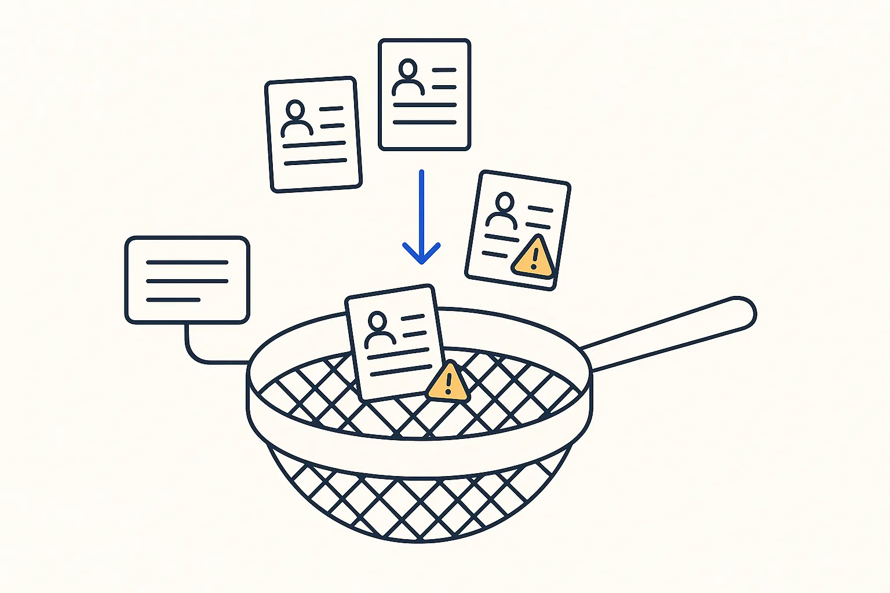

Sample · intermediate
Rules that catch errors before they reach a customer
A sample of real records in, written validation rules and a list of violations out.

Based on: The mirror that went stale and nobody noticed · Level: intermediate · Time: 45 minutes live, or one Build Day afternoon
Steps
- Take a sample of fifty records (orders, contacts, invoices).
- Write five rules that must always hold: an invoice has a customer number, an amount is positive.
- Let the AI turn the rules into checks and list every violation.
- Fix or explain each violation.
- Add one rule for freshness: when was this data last updated?
What you take home
A working result on example data, the rules written down, and the list of cases the rules did not cover — the honest next step.
The neighbourhood